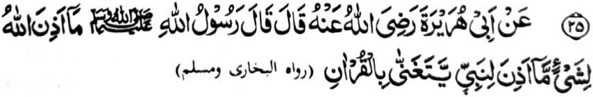

Miyakathitayan ko Abu Hurairah (Radhiallaho ‘Anho) a pitharo iyan a pitharo o Rasulollah (Sallallaho ‘Alaihi wa Sallam), “Da-a piyamakineg [phiya-piya] o Allah a nganin a ba niyan kalawani so kapephamamakinega Niyan ko sakatao a Nabi a pembatiya-an niyan so Qur’an phiya-piya ko mapiya lago.”
Miya-aloy sa paganay a so Allah na tatandingan niyan sa pamakineg so kapembatiya-a ko Qur’an, a katharo Iyan. Sabap sa so manga Nabi na inggogolalan niran sa tarotop so pada-adat ago so manga bitikan o kabatiya sa Qur’an, na marayag a karina sa kapephamamakinega kiran o Allah. So kinipharasen non ko mapiya a lago na miyaka-oman non sa kapiya. So peman so manga ped a tao a salakao ko manga Nabi, na so kapembatiya iran na pephakagamit sa pamakinegan o Allah si-i ko takes a kapiya niyan.